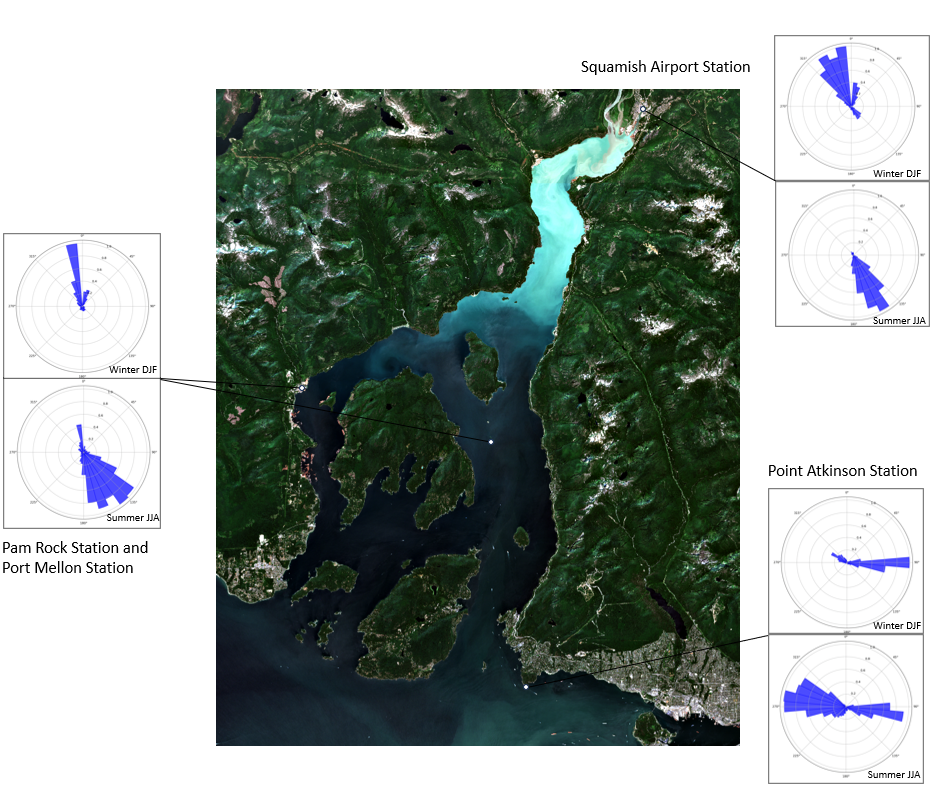
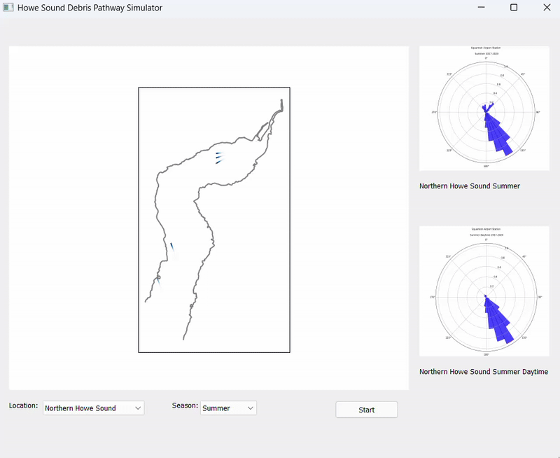

Debris Hotspot Analysis in Howe Sound BC
Marine debris poses significant environmental and infrastructural risks, yet no studies have predicted debris accumulation patterns in Howe Sound. This research uses supervised classification of satellite imagery to analyze common landcover features of existing debris hotspots and develops a simulation model incorporating wind and river discharge as debris driving forces to predict future debris movement. By mapping debris pathways and identifying high-risk zones, this study aims to support conservation efforts and improve debris management strategies in the region.
Fig 1. Satellite images of Howe Sound on a winter and summer day at 20m resolution.
Result
Classification
Multi-band satellite images (20m resolution) were merged into a true-color composite in ArcGIS Pro. Training data for six landcover types—vegetation, ocean water, river discharge, urban area, snow, and exposed rocks—were manually created, and classification was performed using Maximum Likelihood Classification and a neural network algorithm. Figure 2 presents the classified maps of the Howe Sound study area, revealing seasonal patterns: reduced snow cover in summer and lower river discharge in winter. These findings suggest that river discharge drives debris accumulation in northern and central Howe Sound primarily during summer. Additionally, there’s a missing in debris hotspot along the western shoreline of Howe Sound, possibly due to lower population density and less resident reports.
Fig 2. Supervised classification map comparing satellite images of Howe Sound on a winter and summer day.
Wind Data
Another significant driving force for debris movement is wind. In Howe Sound, four stations collect hourly wind data. The wind rose diagrams for summer (June–August) and winter (December–February) at Squamish Airport, Point Atkinson, Pam Rock, and Port Mellon stations are shown in Figure 3.
Fig 3. Wind rose diagram showing daytime wind direction at stations in Howe Sound.
Debris Pathway Simulation Model

The debris simulation model and the UI can be found on my github.